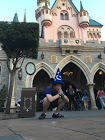

<!DOCTYPE html>
<title>Vincent's Profile</title>

<style>
  body {
    background: violet;
    font-family: Helvetica;
    color: gray;

  }

  #profile-photo {
    border-radius: 50%;
    position: absolute;
    top: 40px;
    left: 50%;
    margin-left: -40px;
  }

  ul a {
    text-decoration: none;
  }

  h1, h2 {
    font-weight: lighter;
    text-align: center;
    color: black;
    margin: 0;
  }

  section {
    background: white;
    margin: 16px;
    border:1px solid black;
    padding: 10px;
    padding-top: 60px;
    border-radius: 10px;
  }
</style>


<header>
<h1>Vincent Nguyen</h1>
  
</header>

<section>
  <h2>Directory</h2>
    <ul>
      <li><a href="photo.html" title="Vincent's Photos">Photos</a>
      <li><a href="friends.html" title="Vincent's Friends">Friends</a>
      <li><a href="blog.html" title="My Blog">Blog</a> 
    </ul>
</section>

<section>
  <h2 class="summary-header">Summary</h2>
    <p>I was born and raised in Oakland, California. I like Overwatch, Hamilton,
      and coffee.</p>
</section>

<section>
  <h2>Hometown</h2>
    Oakland,California
</section>

<section>
  <h2>University</h2>
    University of California, Irvine
</section>

<section>
  <h2>Other Profiles</h2>
      <ul>
          <li><a href="http://www.facebook.com/vincent.nguyen.1042">Facebook</a></li>
      </ul>
</section>

<section>
  <h2>Favorite Movies</h2>
    <ol>
      <li>Dope</li>
      <li>Spiderman: Homecoming</li>
      <li>Rush Hour</li>
    </ol>
</section>
